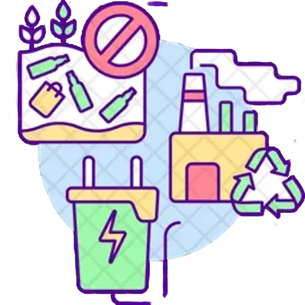

Exemples i sectors de Selecció Positiva
Líders en energia neta
Empreses del sector energètic que destaquen per reduir les seves emissions, augmentar el pes de les renovables i tenir plans de transició creïbles.

Gestió eficient de residus
Companyies que apliquen l'economia circular: redueixen els residus, reutilitzen materials i mesuren el seu consum d'aigua i de recursos.
Governança i transparència
Organitzacions amb consells d'administració independents, bona gestió dels riscos, polítiques anticorrupció i informació clara per als accionistes.
Impacte social positiu
Empreses amb bones pràctiques laborals, igualtat de gènere, seguretat a la feina, respecte als drets humans i una cadena de subministrament responsable.